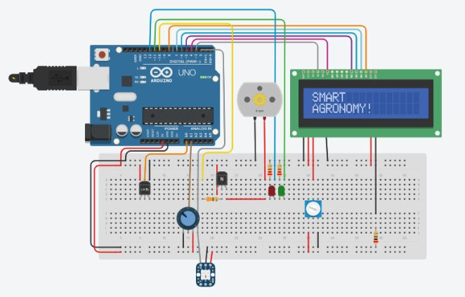
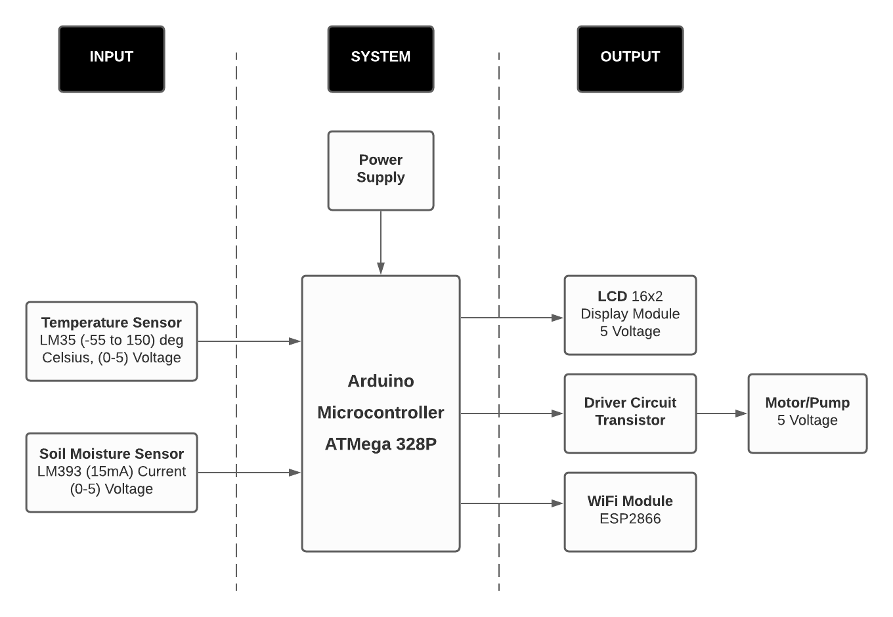
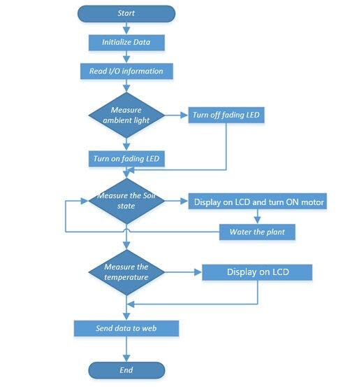

Welcome to Smart Agrnomy
Introduction -
In the world where technology is advancing at an unrealistic pace, AutomationSystems are preferred over manual labor. The technological advancements in do-mains of the micro-controller can be utilized to help farmers protect their crops.India is an agrarian country with agriculture contributing approximately 13% of theGDP.
The project is designed to function as a Smart Agriculture System which turnsthe pump/motor ON/OFF depending on the Moisture content of the soil (which willbe measured by the sensor).
We will be using ATMEGA 328 micro-controller which is programmed to re-ceive the input signal of varying moisture condition of the soil with respect to theATMEGA and component arrangement
In our project, a smart agronomy system and its monitoring using iot is de-signed. An IoT device built on Arduino UNO and sensors like Moisture sensor andtemperature sensor is made which updates the sensor readings to cloud in particularamount of times. It is an IoT platform for visualising data in different formats. TheWi-Fi module is serially connected to the Arduino to connect with internet.The device is connected to a water pump. The water pump is automaticallyturned on/off based on the readings of the moisture sensor. We used different sensorsto identify moisture and temperature and can be monitored through internet whichcan be uploaded to cloud.
Circuit Diagram :

Block Diagram :

Explanation :
This prototype monitors the amount of soil moisture and temperature. A prede-fined range of soil moisture and temperature is set, and can be varied with soiltype or crop type. The block diagram of smart irrigation system is represented. It consists of amicrocontroller (Arduino UNO) which is the brain of the system.Both the moisture and temperature sensors are connected to the input pins of the con-troller. The water pump is coupled with the output pins. If the sensors departfrom the predefined range, the controller turns on the pump. An LCD displayindicates the status of the pump. This system can be implemented on a large scale for farming purposes, whichcan further prove to be more advantageous. Owing to prevailing conditionsand water shortages, the optimum irrigation schedules should be determinedespecially in farms to conserve water.
Flow Chart :

Components Used :

The Moisture sensor is used to measure the water content(moisture) of soil.when the soil is having water shortage,the module output is at high level, else the output is at low level.
LM35 is a temperature sensor

The ESP8266 can be controlled from your local Wi-Fi network or from the internet (after port forwarding). The ESP-01 module has GPIO pins that can be programmed to turn an LED or a relay ON/OFF through the internet.

Liquid crystal displays (LCDs) are a commonly used to display data in devices such as calculators, microwave ovens, and many other electronic devices.
To control the direction of the motor, the pins in1 and in2 must be set to opposite values. If in1 is HIGH and in2 is LOW, the motor will spin one way, if on the other hand in1 is LOW and in2 HIGH then the motor will spin in the opposite direction.
A small transistor like the PN2222 can be used as a switch that uses just a little current from the Arduino digital output to control the much bigger current of the motor.